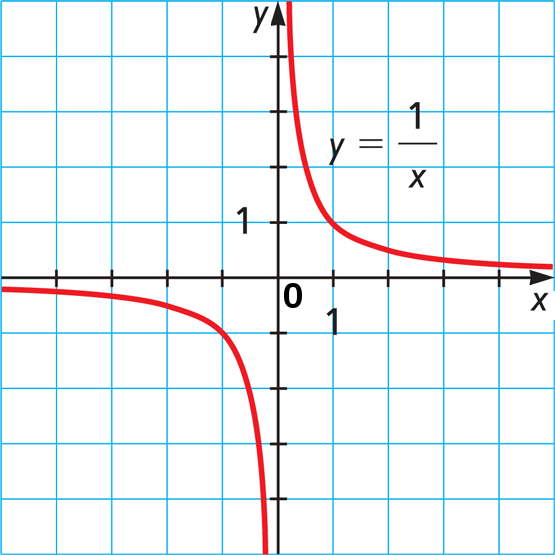
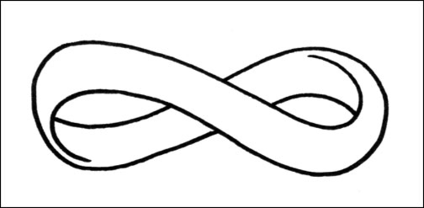
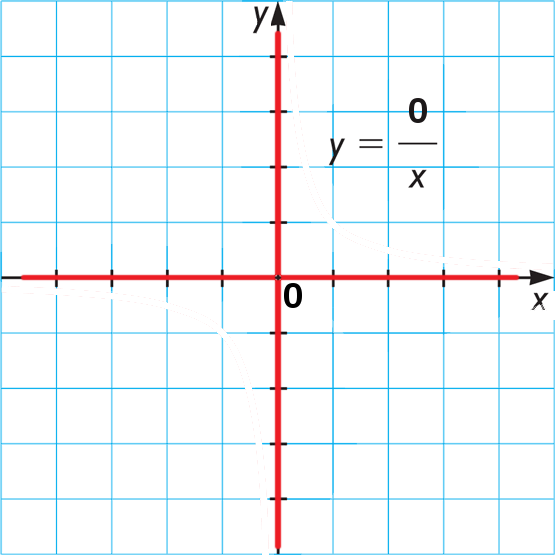

Моя трёхлетняя дочка София в последнее время частенько упоминает "ноль", например, в таком контексте:
- Соня, вот ты вроде сначала не послушалась, а затем послушалась, что же получается?..Т.е. ощущение отрицательных чисел и нейтральности нуля уже имеет, о как.
- Ну.. ноль!
Скоро поинтересуется и почему же это на ноль делить нельзя.
И вот решил я простыми словами записать всё, что я ещё помню про деление на ноль и всё такое.
Деление вообще лучше один раз увидеть, чем сто раз услышать.
Ну, или один разделить на икс раз увидеть...

Тут сразу видно, что ноль - это центр жизни, вселенной и всего такого.
Ответом на главный вопрос про всё это пусть себе будет 42, а вот центр - по-любому 0.
У него даже знака нет, ни плюс (послушалась), ни минус (не послушалась), он таки реально ноль.
И в поросятах знает толк.
Потому что если любого поросёнка умножить на ноль,
то поросёнка засасывает в эту круглую чёрную дыру, и получается опять ноль.
Не такой уж этот ноль и нейтральный, когда дело от сложения-вычитания
доходит до умножения, не говоря уже про деление...
Там если ноль сверху "0/x" - то опять чёрная дыра. Всё поедает в ноль.
А вот если при делении, да ещё и снизу - "x/0", то начинается...
...следуй за белым кроликом, Соня!
В школе тебе скажут "на ноль делить нельзя" и не покраснеют.
В доказательство тыкнут на калькуляторе "1/0="
и обычный калькулятор, тоже не покраснев, напишет "E", "Error", мол, "нельзя - значит нельзя".
Хотя что там у тебя будет считаться обычным калькулятором - ещё вопрос.
Мне вот сейчас, в 2014-ом, стандартный калькулятор на телефоне-андроиде пишет совсем другое:

Ничего себе бесконечность. Скользи себе взглядом, круги нарезай.
Вот тебе и нельзя. Оказывается можно. Если осторожно.
Потому что не осторожно ой андроид пока тоже не согласен: "0/0=Error", опять нельзя.
Попробуем ещё разок: "-1/0 = -∞", о как. Интересное мнение, но я с ним не согласен.
Как не согласен и с "0/0=Error".
Кстати, JavaScript, который питает нынешние сайты, тоже не согласен с калькулятором андроида:
Зайди в консоль браузера (ещё F12?) и напиши там: "0/0" (ввод).
JS тебе ответит: "NaN". Это не ошибка. Это "Not a Number" - т.е. какая-то штука такая,
но не число. При том что "1/0" JS тоже понимает как "Infinity".
Это уже ближе. Но пока только тепло...
В универе - высшая математика. Там пределы, полюса, и прочее шамнство.
И всё усложняется, усложняется, ходят вокруг да около,
но только бы не нарушать хрустальные законы математики.
А вот если не пытаться вписать деление на ноль в эти существующие законы,
то можно прочувствовать эту фантастику - на пальцах.
Для этого посмотрим-ка ещё раз на деление:
Следи за правой линией, справа налево.
Чем ближе икс к нулю, тем сильнее взлетает вверх разделённое на икс.
И где-то там в облаках "плюс бесконечность".
Она всегда дальше, как горизонт, её не догонишь.
А теперь следи за левой линией, слева направо.
Та же история, только теперь разделённое улетает вниз, бесконечно вниз, в "минус бесконечность".
Отсюда и мнение, что "1/0= +∞", а "-1/0 = 1/-0 = -∞".
Но фокус в том, что "0 = -0", нету у нуля знака, если не усложнять с пределами.
И вот если поделить единицу на такой "простой" ноль без знака, то не логично ли предположить,
что получится и бесконечность - "просто" бесконечность, без знака, как ноль.
Где она - сверху или снизу? Она везде - бесконечно далеко от нуля во всех направлениях.
Это и есть ноль, вывернутый наизнанку. Ноль - нет ничего. Бесконечность - есть всё.
И положительное, и отрицательное. Вообще всё. И сразу. Абсолют.
Но там что-то было про "0/0", что-то другое, не бесконечность...
Сделаем такой трюк: "2*0=0", ага, скажет учительница в школе.
Ещё: "3*0=0" - опять ага.
И немного наплевав на "на ноль делить нельзя", мол, весь мир и так потихоньку делит,
получим: "2=0/0" и "3=0/0". В каком там классе это проходят, только без нуля, конечно.
Минуточку, получается "2 = 0/0 = 3", "2=3"?!
Вот поэтому и боятся, вот поэтому и "нельзя".
Страшнее "1/0" только "0/0", его даже калькулятор андроида боится.
А мы не боимся!! )
Потому что у нас есть сила
Мы можем представить себя бесконечным Абсолютом где-то там в звёздах,
посмотреть оттуда на грешный мир конечных чисел и людей
и понять, что с этой точки зрения они все одинаковые.
И "2" c "3", и даже "-1", и училка в школе, возможно, тоже.
Так вот, я скромно предполагаю, что 0/0 - это весь конечный мир,
точнее всё, что и не бесконечно и не пустота.

Вот как выглядит ноль, делённый на икс, в моих фантазях,
далёких от официальной математики.
На самом деле похоже на 1/х, только перегиб не в единице, а в нуле.
Кстати, у 2/x перегиб в двойке, а у 0.5/x - в 0.5.
Получается, 0/x при x=0 принимает все конечные значения -
не бесконечности, не пустоту. Там в графике дырочка в нуле, оси проглядывают.
Можно конечно возразить, что "0*0 = 0",
а значит ноль (пустота) тоже попадает в категорию 0/0.
Чуть забегу вперёд - там будут степени нуля и это возражение разлетится в осколки.
В таких божественных категориях есть лишь пустота (0), конечный мир (0/0), и беконечность (1/0).
Упс, единичка-то в бесконечности тоже может быть тоже записана как 0/0,
получится (0/0)/0 - бесконечность.
Вот теперь порядок, всё можно выразить соотношением нулей.
И эти категории подчиняются многим законам обычных чисел,
показывая весьма интересные отношения.
Например, если к бесконечности прибавить конечное,
то бесконечность поглотит конечное, останется бесконечностью:
1/0 + 0/0 = (1+0)/0 = 1/0.
А если бесконечность умножить на пустоту, то они поглощают друг друга,
и получается конечный мир:
1/0 * 0 = (1*0)/0 = 0/0.
Но это только первый уровень сновидений.
Можно копать глубже.
Если ты уже знаешь понятие "степень числа", и что "1/x = x^-1",
то подумав, сможешь перейти от всех этих делений и скобок (вроде (0/0)/0)
просто к степеням:
1/0 = 0^-1
0/0 = 0^0
0 = 0^1
Подсказка.
Тут с бесконечностью и пустотой всё просто, как в школе.
А конечный мир переходит к степеням вот так:
0/0
= (0*1)/0
= 0*(1/0)
= 0 * 1/0
= 0^1 * 0^-1
= 0^(1 + -1)
= 0^(1-1)
= 0^0.
Уфф)
Получается, что положительные степени нуля - это нули,
отрицатльные степени нуля - это бесконечности,
а нулевая степень нуля - это конечный мир.
Такой вот получается универсальный объект "0^x".
Такие объекты прекрасно между собой взаимодействуют,
опять-таки многим законам подчиняются, красота в общем.
Моих скромных познаний математики хватило,
чтобы нарисовать из них абелеву группу,
которая, будучи изолированной в вакууме
("просто абстрактные объекты, такая форма записи, вроде экспоненты"),
даже выдержала проверку крутейшим преподом по матану
с вердиктом "интересно, но ничего не получится".
Ещё бы тут что-нить получилось, это ж табуированная тема - деление на ноль.
В общем, не грузись)
Попробуем лучше просто умножить бесконечность на конечное число:
0^-1 * 0^0 = 0^(-1 + 0) = 0^-1.
Опять же, бесконечность поглотила конечное число так же,
как и её антипод ноль поглощает конечные числа, та же чёрная дыра:
0^1 * 0^0 = 0^(1 + 0) = 0^1.
А ещё оказывается что степени - это как сила.
Т.е. ноль второй степени сильнее нуля обычного (первой степени, 0^1).
И бесконечность минус второй степени сильнее бесконечности обычной (0^-1).
А когда пустота сталкивается с абсолютом, они меряются силой - у кого больше, тот и победит:
0^1 * 0^-2 = 0^(1 + -2) = 0^-1 = ∞.
0^2 * 0^-1 = 0^(2 + -1) = 0^1 = 0.
Если же они равны силами, то аннигилируются и остаётся конечный мир:
0^1 * 0^-1 = 0^(1 + -1) = 0^0.
Кстати, официальная математика уже рядом.
Её представители знают про "полюса" и что у полюсов разная сила (порядок),
а так же про "нуль порядка k".
Но они всё топчутся на прочной поверхности "рядом с"
и боятся прыгнуть в чёрную
И последний для меня - третий уровень сновидений!
Вот, например, эти все 0^-1 и 0^-2 - бесконечности разной силы.
Или 0^1, 0^2 - нули разной силы.
Но ведь и "-1" и "-2" и "+1" и "+2" - это всё - 0/0, равное 0^0, уже проходили.
Получается что с этого уровня сновидений, уже всё равно вообще что это -
нули, бесконечности, и даже конечный мир туда при некотором просветлении попадает.
В одну точку. В одну категорию. Называется это счастье - Сингулярность.
Надо признать, что вне состояния просветления одной точки я не наблюдаю,
но одну категорию - объединение "0^0 U 0^(0^0)" - вполне.
Какую из всего этого можно вынести пользу?
Ведь даже чуть менее безумные "мнимые числа", что тоже рвут калькуляторы в Error = √-1,
и те смогли стать официальной математикой и теперь упрощают расчёты сталеварения.
С делением на ноль и категориями 0^x польза, скорее, философская.
Увидеть, как бесконечности и пустоты поглощают конечное,
как пустота может победить бесконечность, а может случиться и наоборот.
Как листья на дереве издалека кажутся одинаковыми,
но если рассмотреть их внимательнее - они все разные.
А если задуматься, то опять одинаковые. И мало чем отличаются от теб или меня.
Вернее, вообще ничем не отличаются, если крепко задуматься.
Польза тут в умении и фокусироваться на отличиях и абстрагироваться.
Это очень полезно и в работе, и в жизни, и даже в отношении к смерти.
Вот такие путешествия в кроличью нору, Соня! )
2014-08